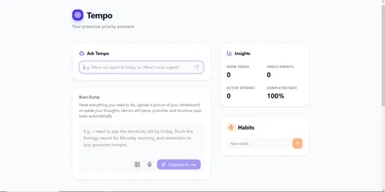
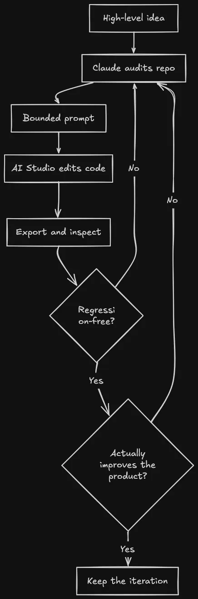
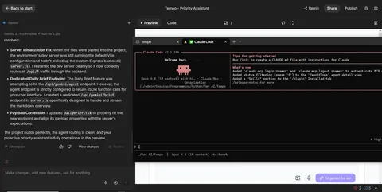
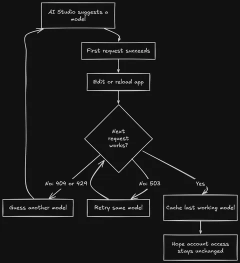
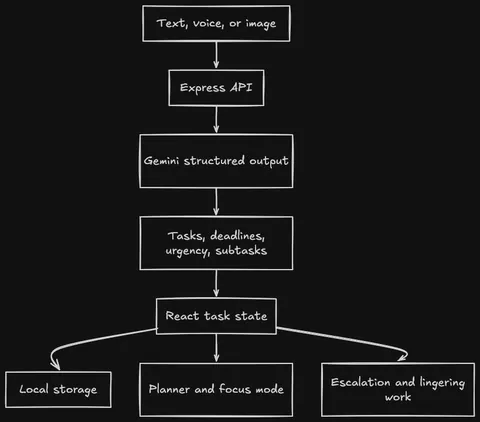
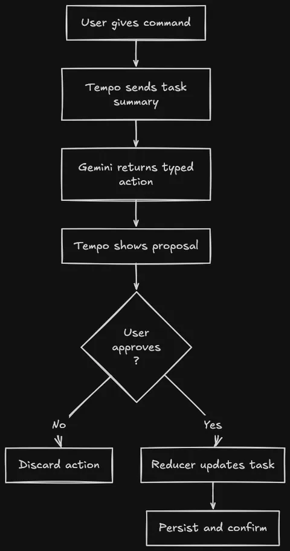

Vibecoding Hackathons?
By Sukalyan RoyPublished 11 min read

I entered a vibecoding hackathon and somehow ended up using one AI to tell another AI how to build the app.
This parody of software development is unfortunately the truth.
The project was Tempo, a proactive productivity assistant for people who are overwhelmed, behind, or frozen. It was built for a vibecoding hackathon run around Google AI Studio. The entry got rejected.
I don't care much about the rejection. What annoyed me more was that the tool I was required to use kept becoming the most frustrating part of the thinking process.
TL;DR #
-
I built Tempo, an AI task companion that turns messy brain dumps into prioritized tasks, drafts the first piece of work, plans the day, and asks for approval before changing anything important.
-
The hackathon required Google AI Studio during development and a public Google Cloud deployment for submission.
-
My actual workflow became Claude for product judgment and precise prompts, then Google AI Studio for implementation.
-
AI Studio could generate plenty of code. Getting it to make coherent product decisions without sprawling or regressing existing work was another matter.
-
Tempo was rejected, but I am keeping it as a personal project because the original problem is still mine.
Project status
The source code is public, and the core app exists. It has task ingestion, proactive drafts, planning, focus sessions, escalation, persistence, and a confirmation-gated command agent. It does not yet have accounts, cross-device sync, or calendar integration. The next sensible step is to use it myself and remove what does not survive contact with real life.
Live demo
The deployed link is here
But there is no guarantee that it will work even if the deployment is up, due to the model issues described later on.

The hackathon gave me a problem I actually have #
The selected problem statement was called "The Last-Minute Life Saver." Build an AI productivity companion that does more than send reminders. It should help people plan, prioritize, and complete work before deadlines are missed.
This was close enough to my own habits to be useful to me regardless of the hackathon.
Normal to-do applications assume the user still has enough executive function left to maintain the to-do application. You create the task, choose the category, estimate the time, set the deadline, notice the reminder, and decide what to do next. By the time I have done all that, I could have started the work.
Tempo started from a simpler idea: dump the mess into one box and make the next action obvious.
The rules also made AI Studio use mandatory. A public Google Cloud deployment was one of three required artifacts, alongside the repository and a Google Doc. Agentic depth counted for 20% of the score. So I could not just build a prettier task list and attach Gemini to a chat box. The application had to do something.
Then I opened Google AI Studio and it ruined my day.
The AI app builder that needed an adult in the room #
Google AI Studio was very good at producing the feeling of progress.
Give it a broad feature request and code would appear. Components multiplied. Buttons arrived. The preview changed. This is the narcotic part of vibecoding: visible motion is easy to confuse with the project becoming better.
The harder questions were:
Is this feature solving the prompt or just decorating it?
Is the app becoming more agentic, or merely collecting more AI buttons?
Did the last generation preserve the storage model?
Does the new task shape still work with old local data?
Will a judge understand the differentiator in three minutes?
Should I add another feature, or have I crossed into nonsense?
So I used Claude as an adviser. I would export or sync the latest version, ask Claude to inspect the real repository, criticise it as a judge, research comparable tools, and tell me the smallest next change worth making. Then I asked for one detailed implementation prompt and handed that prompt to AI Studio.
That became the development loop:
-
Let AI Studio implement a bounded change.
-
Pull the result back into the repo.
-
Have Claude inspect what actually existed, including the mistakes.
-
Decide whether another feature would improve the product or merely make the demo busier.
-
Feed the next constrained prompt back into AI Studio.

Near the end, my questions to Claude had stopped sounding like feature requests. They were, almost verbatim, "Will adding anything more make the project overengineered?", "is this done now?", and finally, "Give me an honest critique of what it would look like to a judge." That is me trying to stop a model from writing three apps on top of the first one.
It also says something fairly damning about the primary tool. I was using a second model to provide product memory, architectural restraint, review, and taste because the app builder itself was too easy to steer into feature soup. And even then the features it generated were incoherent and trashy.
Google AI Studio was the hands, Claude was the person standing behind it saying, "No, only change this one thing, preserve these invariants, and run these checks."
If your vibe needs a specification, an external reviewer, a regression checklist, and another model to keep it on the road, we have reinvented software engineering with worse windows.

Model access by trial and error #
The app still needed Gemini API access. This produced its own separate loop of nonsense.
AI Studio would not clearly tell me which models my account could actually use, or how much quota each one had. Sometimes the builder itself found a model that responded. I would edit the model selection, run the application again, and it would fail after one turn at most. A model being visible != model being usable.
So I kept changing the model, tracing the error, adding fallback behaviour, and trying again. The final server code handles missing models, exhausted quota, rate limits, transient failures, and depleted prepayment credits. That sounds like resilience engineering. Archaeology around an account whose capabilities the product refused to state plainly.

I wanted to see how blindly I could build this submission but the API made sure I learned parts of it anyway. I still had to read the generated code, understand why requests were failing, and debug the integration manually, even when AI Studio made the final code change.
The Google Cloud toll booth #
The submission rules required a public Google Cloud deployment. My main Google account had a free Google plan supplied through Jio. The problem was broader than Jio itself: the account already had a Google plan, but that plan did not include AI Studio. That made the free deployment path disappear.
Instead, it pushed me toward paid setup and an upfront payment of roughly ₹1,000 to ₹1,500. That money was mandatory required prepaid credits. Google's billing documentation says Gemini API prepay credits are non-refundable, expire after one year, and the service stops when they run out.
I was being asked to lock money inside Google Cloud so I could submit a student hackathon project built with Google's own mandatory tool.
The workaround was wonderfully stupid. I copied the entire AI Studio project to another email address. This second account had no Jio offer, no Google subscription, nothing. On that completely basic account, AI Studio finally offered the two free deployments per month and deployed Tempo.
Google's Starter Tier documentation describes a path for individual accounts with no billing information. Its AI Studio deployment page also lists exclusions and warns that some users may still need to upgrade.
I could not find a public Google page that names the Jio bundle specifically , but it's clearly visible in the phone recharge section and the My Jio app itself for those of us who use it. The ₹1,000 prepayment itself is not unique to me; other Indian users have reported the same Cloud Billing setup.
The account with more Google attached to it received the worse Google developer experience. The empty account got the free deployment.
Very smooth.
What Tempo became #
The initial version was basically a brain dump with Gemini attached. Type or speak something like, "Pay the electricity bill by Friday, finish the report for Monday, call home this weekend," and Tempo turns it into structured tasks with priorities, deadlines, urgency scores, and small subtasks.

Useful but still an AI-flavoured inbox. The later iterations tried to close the gap between organising work and beginning it.
Every task can ask Tempo to execute the first useful piece. For an email, it can draft the email. For a report, it can produce an outline or starting section. The draft can be saved back to the task instead of disappearing into a chat transcript. This was the first feature that made the product feel less like another reminder application.
Tempo also watches time. Tasks approaching their deadlines rise in urgency, appear in a "Needs Attention Now" section, and can trigger browser notifications. The user can snooze or dismiss the escalation. Tasks with no deadline have the opposite problem, so untouched ones resurface as "Lingering" work instead of quietly fossilising in a list.
There is a daily planner that builds a realistic sequence from current tasks, an Eisenhower-style view, habit tracking, and a focus mode whose timer uses the estimated subtask duration instead of blindly worshipping 25 minutes. Most state lives in localStorage, which kept the hackathon build simple but also means there is no cross-device life yet.
The final major iteration was the command agent. A user can type, "Move my report to Friday," "mark the electricity bill done," or "plan my day." Gemini function calling converts that sentence into a small set of typed actions.
The important part is that mutations do not execute immediately. Tempo shows the proposed actions in plain language and waits for approval. Individual actions can be removed. That confirmation gate is less flashy than autonomous clicking, but the most trustworthy.

The stack in the repository is ordinary on purpose: React, TypeScript, Vite, Tailwind, Express, and @google/genai. Gemini calls go through the server so the API key does not sit in the browser bundle. Structured output is used where a free-form answer would make the rest of the application guess. The model proposes. A plain reducer changes task state. localStorage persists it.
Underneath all the AI branding, the bit I like most is the boundary between a suggestion and a mutation. That is where the application briefly stops vibing and behaves like software.
It got rejected #
The entry was rejected. I do not have evidence for a precise technical reason, so I am not going to invent one and conduct an imaginary argument with the judges.
The honest critique from the development process was already uncomfortable enough. Without the command agent, Tempo risked looking polished but derivative. Even with it, productivity software is a crowded graveyard of applications that are delightful for three days and then just die.
There are also real unfinished edges. Local storage is not a long-term data model. Browser notifications are not a dependable background reminder system. The model fallback logic needs a careful cleanup rather than an ever-growing list of model names. Calendar sync remains a slide, not a feature. A tool that is meant to reduce anxiety cannot become another dashboard demanding maintenance.
I want to run Tempo for my own work. Not demo data, my actual half-written posts, course tasks, errands, and deadlines. If I keep ignoring the lingering section, it is wrong. If generated drafts save time but daily plans do not, the planner goes. If opening the app itself becomes friction, the product has failed its own premise.
For deployment, I will either put it on a simple service I already understand or leave the repository until the application earns hosting. I have no interest in maintaining a miniature cloud estate for a personal to-do tool.
This was not a learning project #
In "Using vibecoding to learn", I argued for using generated code as a hint engine without outsourcing the struggle that teaches the concept.
Tempo had almost the opposite goal. I wanted to see how blindly I could vibecode a functional submission. I was not trying to learn its stack properly. I was not worried about understanding every generated line. The experiment was submission first, understanding only when the machine forced it on me.
And it did force it on me. Model access broke. Generated changes regressed working behaviour. Focus-mode checklists stopped being checkable. Prompts needed invariants because the tool would otherwise wander. I had to understand enough of the system to locate each failure and explain the fix, even when the AI wrote the final patch.
So my earlier rule still stands for learning projects. Tempo taught me something else: even blind vibecoding has a comprehension tax.
My next post will move from hackathon software to a smaller question: what happens when you write tools for yourself and then have to live with them?
I have a browser extension called Snapback that I had vibecoded similarly long before this hackathon, which I need to start using regularly again before I write about it.
A personal tool has one judge who cannot be impressed by a three-minute demo: Me, two weeks later.
If you try Tempo, give it one ugly, overdue, badly phrased real task and tell me where it fails to get you moving. That is the only benchmark this project has left.
Future Work: Turning the whole system to work fully using Local LLMs, as an extension to my RAG project, and perhaps connect it to Snapback as well for a seamless experience.